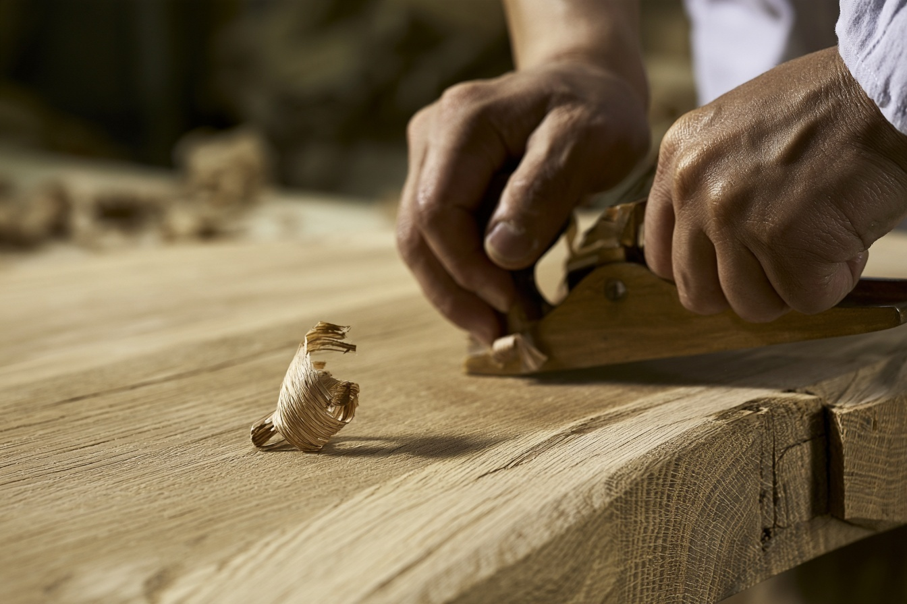

찻자리찻자리 살펴보기
작은 소반
참나무
가장자리를 살짝 올리고 짧고 가는 다리를 더한 작은 사각 소반. 편히 앉아 차를 즐기는 자리를 생각했습니다.
소재와 형태
참나무로 구성한 다경의 콘셉트 컬렉션입니다.
사용과 관리
부드럽게 닦고 충분히 말려 주세요. 물에 담가 두거나 오랫동안 열에 직접 노출하지 마세요.


찻자리를 가까이.
창가나 방석 옆, 잠시 시간을 보내고 싶은 곳 어디든. 작은 상 하나면 충분할 수 있습니다.
참나무
가장자리를 살짝 올리고 짧고 가는 다리를 더한 작은 사각 소반. 편히 앉아 차를 즐기는 자리를 생각했습니다.
참나무로 구성한 다경의 콘셉트 컬렉션입니다.
부드럽게 닦고 충분히 말려 주세요. 물에 담가 두거나 오랫동안 열에 직접 노출하지 마세요.

창가나 방석 옆, 잠시 시간을 보내고 싶은 곳 어디든. 작은 상 하나면 충분할 수 있습니다.